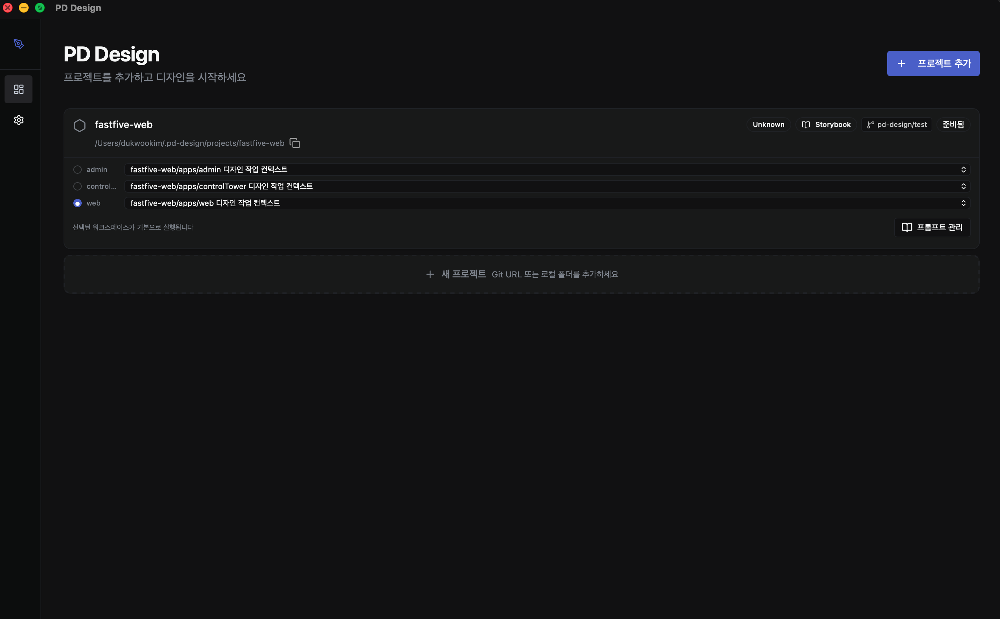
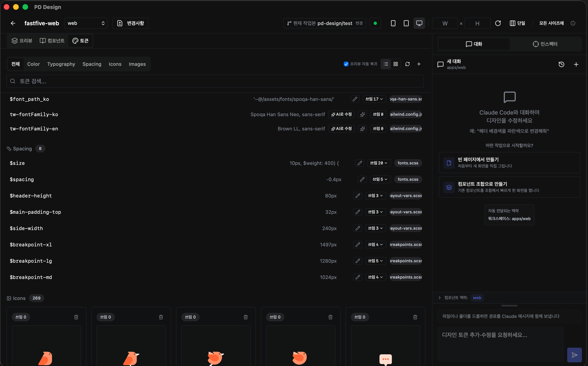
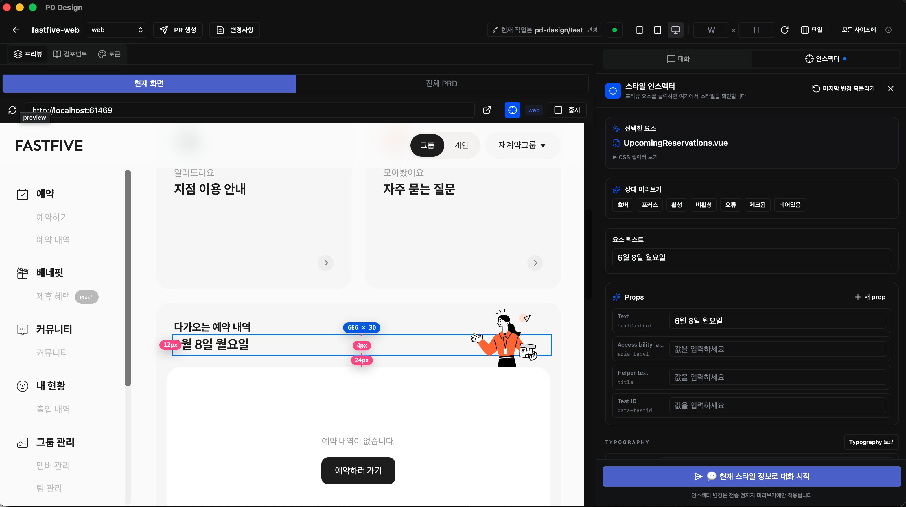

Career Case Study
pd-design 데스크톱 디자인 협업 도구
Figma가 아니라 실제 코드베이스를 디자인 협업의 기준점으로 삼아, 로컬 프로젝트 인식·디자인 토큰 추출·실시간 미리보기·AI 변경 요청을 한 흐름으로 연결한 Tauri 기반 데스크톱 도구입니다.
Tauri v2RustReact 19TypeScriptTailwind CSSZustand
문제 정의
디자인-코드 불일치
Figma 설계와 실제 구현 결과가 props, 토큰, 상태에 따라 계속 어긋났습니다.
반복 검수 비용
디자이너가 화면을 만들고 개발자가 다시 구현한 뒤, 실제 결과를 다시 검수하는 과정이 반복됐습니다.
코드 맥락 접근성
컴포넌트와 토큰의 실제 동작을 비개발자가 확인하기 어려워 변경 요청이 추상적으로 남았습니다.
구현 구조
Tauri v2 기반 데스크톱 앱에서 로컬 코드 프로젝트를 자동 인식하고 dev server를 실행해 실시간 미리보기를 제공합니다. CSS/SCSS/JSON/Tailwind/TypeScript 기반 디자인 토큰을 추출하고, Claude Code CLI와 연결해 자연어 변경 요청을 git/PR 흐름으로 전달할 수 있게 구성했습니다.
스크린샷 갤러리


